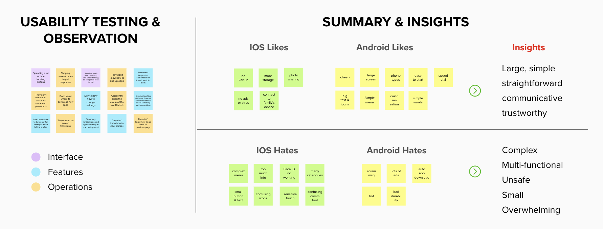
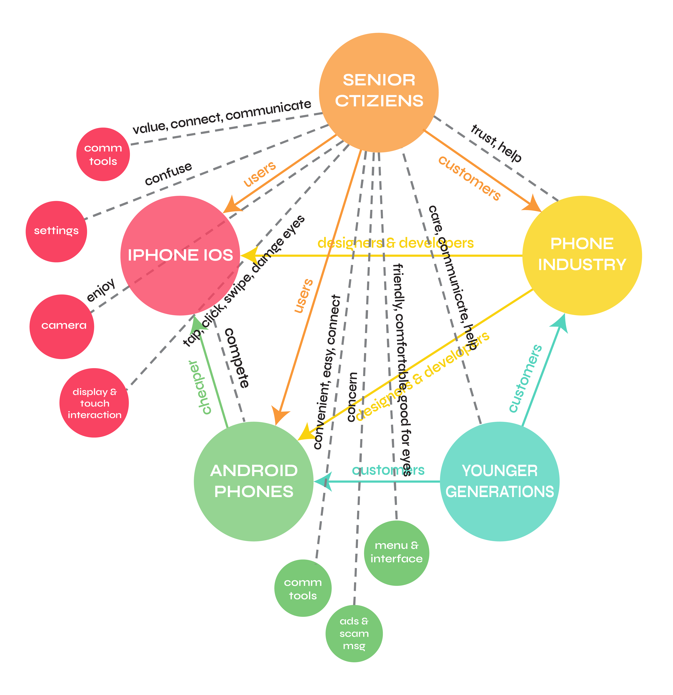

App Design
Case Study
In terms of COVID-19, isolation has become our main lifestyle, and phones become the primary approach to maintain social connectedness and daily matters. For example, my grandparents had to transition to using smartphones with advanced capabilities more than just making calls in order to communicate and keep up with the times to feel more connected. However, as mobile use among seniors is rising, technical proficiency varies among seniors. That’s why we said even before, but especially now, senior citizens’ user experience of smartphones is important.
Therefore, I'm going to explore and evaluate senior citizens' interactions and user experiences with smartphones, specifically, iOS vs Android, figuring out their problems, needs, and wants in order to help them use phones smoothly.
Mural Board
ERAF Diagram
